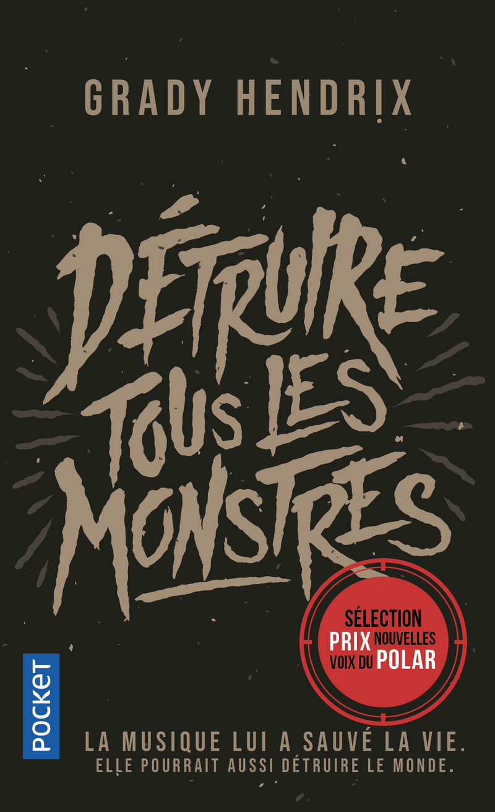
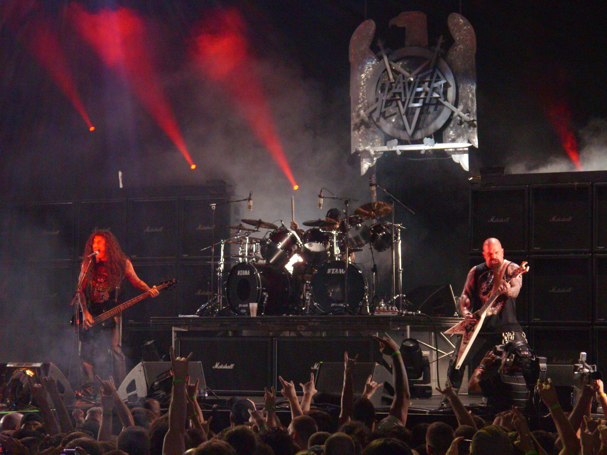

Commençons par une remarque préalable : en effectuant quelques recherches pour la rédaction de cette note, je remarque que Détruire tous les monstres, pourtant sorti en poche en français chez Pocket en 2021, va ressortir chez le même éditeur cette année sous le nom Nous avons vendu nos âmes. Curieuse manoeuvre, même si le nouveau titre correspond bien davantage à l’original. Pour autant, je m’en tiendrai à ma version, celle de 2021. Mais de quoi s’agit-il ? De musique qui sent la bière, les cheveux longs et la distorsion : de metal. La protagoniste, Kris, a connu un début de succès dans sa jeunesse avec son groupe Dürt Würk. Ils auraient pu devenir vraiment célèbres, jusqu’à ce qu’ils fichent tout par terre lors d’une nuit dont personne ne conserve vraiment de souvenir. Elle travaille maintenant à l’accueil d’un hôtel miteux et traîne avec elle son ennui. Un jour, on annonce le retour fracassant de Koffin, la formation de son ancien chanteur, désormais une star mondiale après l’avoir trahie. Kris décide alors de reprendre contact avec d’anciens membres du groupe.

L’auteur américain Grady Hendrix (dont c’est le cinquième roman) semble être un habitué des récits d’horreur. Détruire tous les monstres est ainsi un thriller horrifique qui m’a parfois rappelé la série britannique Utopia de par sa tonalité conspirationniste troublante. J’entends par là que c’est parfois difficile de savoir si les personnages déconnent plein tube ou s’il y a bel et bien quelque chose qui cloche. A côté de ça, il est bien sûr énormément question de musique (les amateur.es de metal seront enchantés) et surtout de sincérité créative, de jusqu’où un.e artiste est prêt.e à aller pour enfin connaître le succès (vendre son âme par exemple, et à quel prix ?). Pour porter cette histoire, l’auteur a écrit des personnages variés et complexes (en premier lieu sa protagoniste quadragénaire désabusée mais combative). Les chapitres sont assez courts, entrecoupés d’extraits radiophoniques qui donnent une idée du contexte, et incitent à tourner les pages encore et encore. C’est en résumé un livre très réussi, violent par moment et profondément amoureux du metal auquel il rend un bien bel hommage.
Titre original : We Sold Our Souls / Sortie originale (anglais) : 2018 / Version française : 2020 (traduction : Héloïse Esquié)
Image :
- Le groupe Slayer, dont il est parfois question dans ce livre, en concert en 2009 (crédits photo : By Mdnghtshdw - Own work, CC BY-SA 3.0, https://commons.wikimedia.org/w/index.php?curid=20114187)